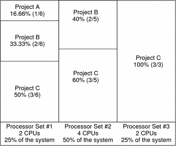

Previous
Previous
FSS and Processor Sets
The FSS can be used in conjunction with processor sets to provide more fine-grained controls over allocations of CPU resources among projects that run on each processor set than would be available with processor sets alone. The FSS scheduler treats processor sets as entirely independent partitions, with each processor set controlled independently with respect to CPU allocations.
The CPU allocations of projects running in one processor set are not affected by the CPU shares or activity of projects running in another processor set because the projects are not competing for the same resources. Projects only compete with each other if they are running within the same processor set.
The number of shares allocated to a project is system wide. Regardless of which processor set it is running on, each portion of a project is given the same amount of shares.
When processor sets are used, project CPU allocations are calculated for active projects that run within each processor set.
Project partitions that run on different processor sets might have different CPU allocations. The CPU allocation for each project partition in a processor set depends only on the allocations of other projects that run on the same processor set.
The performance and availability of applications that run within the boundaries of their processor sets are not affected by the introduction of new processor sets. The applications are also not affected by changes that are made to the share allocations of projects that run on other processor sets.
Empty processor sets (sets without processors in them) or processor sets without processes bound to them do not have any impact on the FSS scheduler behavior.
FSS and Processor Sets Examples
Assume that a server with eight CPUs is running several CPU-bound applications in projects A, B, and C. Project A is allocated one share, project B is allocated two shares, and project C is allocated three shares.
Project A is running only on processor set 1. Project B is running on processor sets 1 and 2. Project C is running on processor sets 1, 2, and 3. Assume that each project has enough processes to utilize all available CPU power. Thus, there is always competition for CPU resources on each processor set.
The total system-wide project CPU allocations on such a system are shown in the following table.
Project | Allocation |
|---|---|
Project A | 4% = (1/6 X 2/8)pset1 |
Project B | 28% = (2/6 X 2/8)pset1+ (2/5 * 4/8)pset2 |
Project C | 67% = (3/6 X 2/8)pset1+ (3/5 X 4/8)pset2+ (3/3 X 2/8)pset3 |
These percentages do not match the corresponding amounts of CPU shares that are given to projects. However, within each processor set, the per-project CPU allocation ratios are proportional to their respective shares.
On the same system without processor sets, the distribution of CPU resources would be different, as shown in the following table.
Project | Allocation |
|---|---|
Project A | 16.66% = (1/6) |
Project B | 33.33% = (2/6) |
Project C | 50% = (3/6) |
Combining FSS With Other Scheduling Classes
By default, the FSS scheduling class uses the same range of priorities (0 to 59) as the timesharing (TS), interactive (IA), and fixed priority (FX) scheduling classes. Therefore, you should avoid having processes from these scheduling classes share the same processor set. A mix of processes in the FSS, TS, IA, and FX classes could result in unexpected scheduling behavior.
With the use of processor sets, you can mix TS, IA, and FX with FSS in one system. However, all the processes that run on each processor set must be in one scheduling class, so they do not compete for the same CPUs. The FX scheduler in particular should not be used in conjunction with the FSS scheduling class unless processor sets are used. This action prevents applications in the FX class from using priorities high enough to starve applications in the FSS class.
You can mix processes in the TS and IA classes in the same processor set, or on the same system without processor sets.
The Solaris system also offers a real-time (RT) scheduler to users with superuser privileges. By default, the RT scheduling class uses system priorities in a different range (usually from 100 to 159) than FSS. Because RT and FSS are using disjoint, or non-overlapping, ranges of priorities, FSS can coexist with the RT scheduling class within the same processor set. However, the FSS scheduling class does not have any control over processes that run in the RT class.
For example, on a four-processor system, a single-threaded RT process can consume one entire processor if the process is CPU bound. If the system also runs FSS, regular user processes compete for the three remaining CPUs that are not being used by the RT process. Note that the RT process might not use the CPU continuously. When the RT process is idle, FSS utilizes all four processors.
You can type the following command to find out which scheduling classes the processor sets are running in and ensure that each processor set is configured to run either TS, IA, FX, or FSS processes.
$ ps -ef -o pset,class | grep -v CLS | sort | uniq 1 FSS 1 SYS 2 TS 2 RT 3 FX
Setting the Scheduling Class for the System
To set the default scheduling class for the system, see How to Make FSS the Default Scheduler Class, Scheduling Class, and dispadmin(1M). To move running processes into a different scheduling class, see Configuring the FSS and priocntl(1).
Scheduling Class on a System with Zones Installed
Non-global zones use the default scheduling class for the system. If the system is updated with a new default scheduling class setting, non-global zones obtain the new setting when booted or rebooted.
The preferred way to use FSS in this case is to set FSS to be the system default scheduling class with the dispadmin command. All zones then benefit from getting a fair share of the system CPU resources. See Scheduling Class for more information on scheduling class when zones are in use.
For information about moving running processes into a different scheduling class without changing the default scheduling class and rebooting, see Table 26-5 and the priocntl(1) man page.
Commands Used With FSS
The commands that are shown in the following table provide the primary administrative interface to the fair share scheduler.
Command Reference | Description |
|---|---|
priocntl(1) | Displays or sets scheduling parameters of specified processes, moves running processes into a different scheduling class. |
ps(1) | Lists information about running processes, identifies in which scheduling classes processor sets are running. |
dispadmin(1M) | Sets the default scheduler for the system. Also used to examine and tune the FSS scheduler's time quantum value. |
FSS(7) | Describes the fair share scheduler (FSS). |